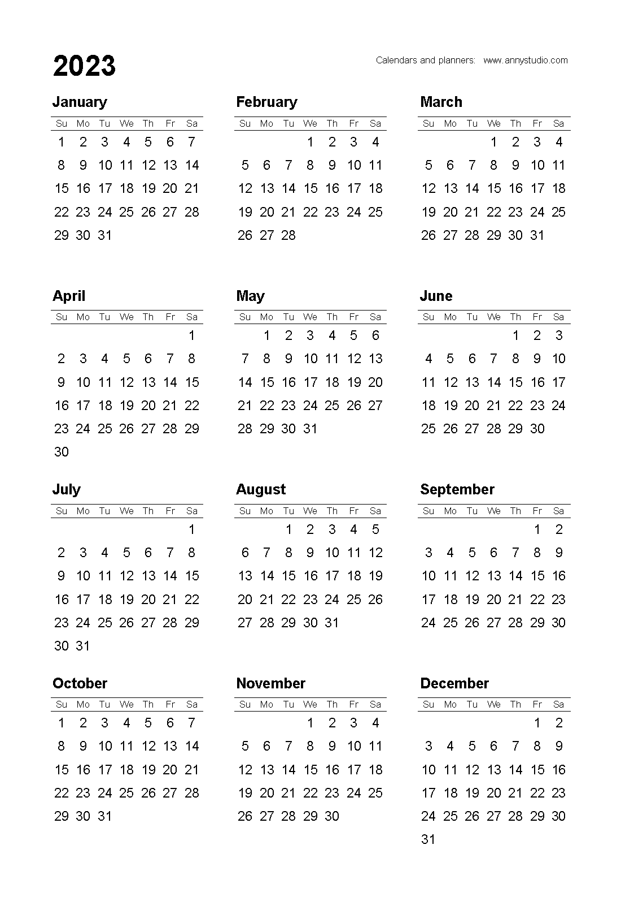

2023 Calendar/달력

Interesting Events in 2023/2023년에 일어날 일들
01.01 Croatia adopts Euro & joins the Eurozone
크로아티아 유로 사용 시작
01.10 Extended support for Windows 8 & 8.1 ends
원도우 8 & 8.1 서포트 종료
02.12 Super Bowl
슈퍼볼
05.05 Penumbral lunar eclipse (visible in Africa, Asia, Austrailia)
반영월식 (아프리카, 아시아, 오스트레일리아에서 관측 가능)
07.01 Tour De France
투르 드 프랑스
10.14 Solar eclipse (visible in Western U.S., Central America, Columbia, Brazil)
금환일식 (미국 서부, 중앙아메리카, 콜롬비아, 브라질에서 관측 가능)
10.28 Partial lunar eclipse (visible in Europe, Africa, Asia)
부분월식 (유럽, 아프리카, 아시아에서 관측 가능)
Calendar image by annystudio.com
Events by wikipedia.com